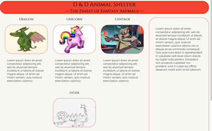
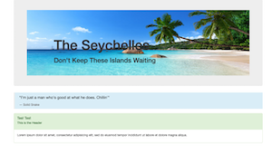
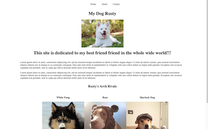
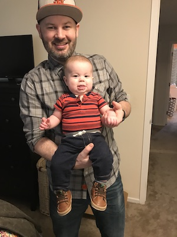

shimer.dev: the work.

Vacation
A site showcasing fictional vacation packages to the Seyschelle Islands.
Built with html, css, and bootstrap.
Github Repo

The Best Dog
A practice website about a made up dog I think is great.
Built with html and css
Github Repo

shimer.dev is Dustin Herboldshimer, a designer and developer in Portland, Oregon.
He is available for hire.
